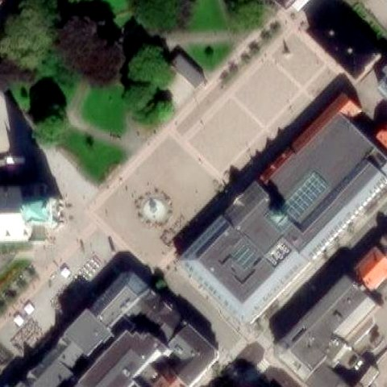
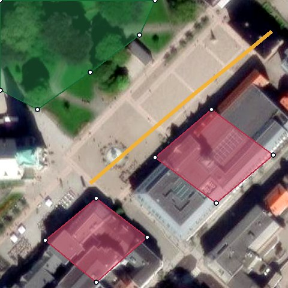
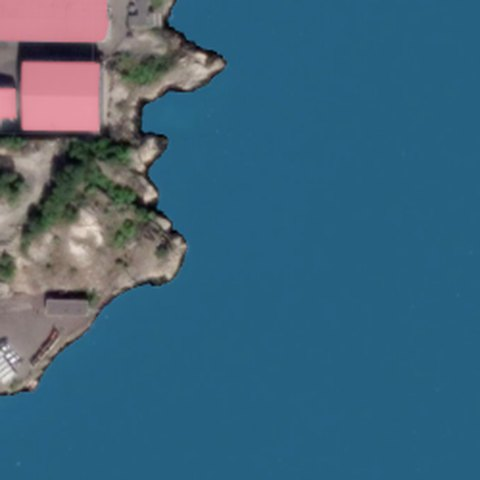
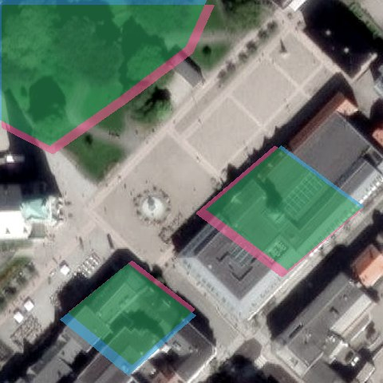

1
Finn ditt område
Zoom inn på skolen, hjemstedet eller stranda i ekte flyfoto.
Utforsk verden ovenfra, bruk KI og bygg ditt eget digitale kart.
Du skal gjøre fire oppgaver: finne et område, tegne ditt eget kart, prøve å gjenskape kartet med KI og sette sammen et ferdig resultat.
Du trenger ikke kunne kode.
Det viktigste er å være nysgjerrig og prøve deg fram.

Zoom inn på skolen, hjemstedet eller stranda i ekte flyfoto.

Marker bygg, veier, skog og vann – akkurat som en geomatiker.

Bruk KI-en til å finne de samme objektene som du tegnet selv.

Kartet ditt legges oppå KI-ens maske. Grønt betyr at dere er enige.
Norge i bilder er Kartverkets eget flyfoto og er mye skarpere, men bildene lastes tregt og dekker bare Norge. Bytt tilbake til Esri hvis kartet blir hengende.
Hypotesen blir med i rapporten du laster ned i steg 4.
Midtstill objektet du vil analysere i kartet. Når du går videre lagres et kvadratisk utsnitt automatisk, og det lastes ned som PNG. Etter at du har tegnet ditt eget kart, laster du den filen opp i WebSAM.
Bruk kartbildet fra steg 1 og prøv å få modellen til å finne de samme objektene som du tegnet i steg 2.
Den står i modellmenyen øverst i WebSAM.
PNG-filen som ble lastet ned i steg 1.
Dette forteller KI-en: «Ta med dette». Lag én eller flere masker, og importer dem under riktig objekttype.
Dette forteller KI-en: «Ikke ta med dette».
Gjør dette i WebSAM før du går tilbake hit. Har du flere objekter eller typer, kan du lagre flere masker – de slås sammen automatisk i steg 4.
Trykk Shift + D i WebSAM for hver objekttype KI-en skal gjenskape. Uten maskefilene kan du ikke sammenligne KI-en med ditt eget kart i steg 4.
Kartet og ortofotoet hentes automatisk. Legg til maskene KI-en laget for objektene du tegnet, så slås de sammen til én sort/hvit maske og et fargelagt KI-overlegg.
Velg hva masken viser, og hent PNG-fila fra WebSAM:
Resultatet oppdateres når kartet og maskene er klare.
Hvit: valgt objekt Sort: bakgrunn
Her legges KI-masken og objektene dine oppå hverandre.